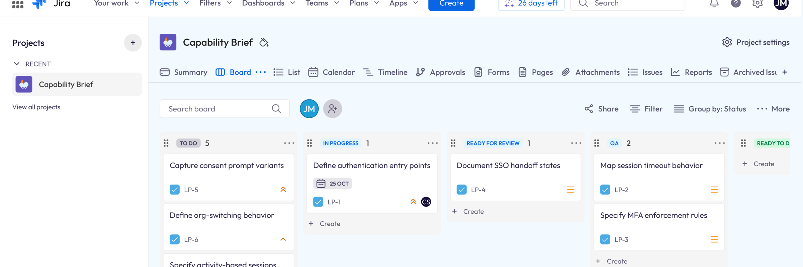
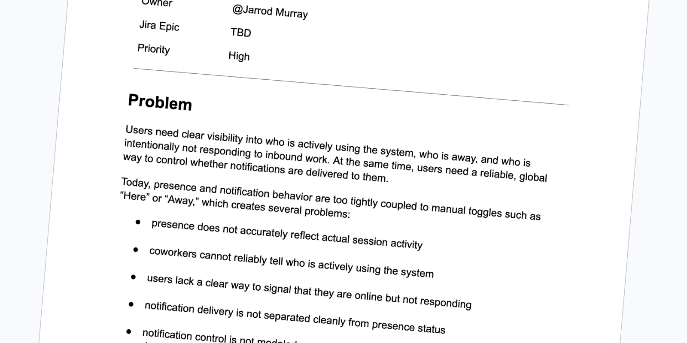

AI-Ready Backlog
What I built when user stories stopped being enough
The Challenge
I was serving as Product Owner, Scrum Master, and UX Lead on a modular frontend migration… replacing Ember with React while keeping the Rails backend intact… and the 3-point story limit we’d adopted to improve velocity was starting to feel like the wrong constraint entirely. Not because stories are hard to write… but because the team was moving toward AI-assisted development, and I started to question whether traditional stories were even the right unit of work anymore.
The industry was shifting. I decided to shift with it.
Role
As Product Owner, I was responsible for the backlog and delivery structure across multiple modules. I took it upon myself to research where AI-first product teams were heading… and redesign how we documented product intent.
Un Understand
The Problem with Stories
User stories are written for human developers… and that’s exactly the problem. The format is built around intent and narrative, not system context. When a feature got too complex, the answer was always the same, break it into smaller stories. That constraint was supposed to improve velocity. In practice, it was just moving the complexity around.
AI doesn’t need narrative framing. It needs boundaries, rules, constraints, dependencies, and edge cases. Feed it a backlog of stories and you get noise. Feed it structured context and you get something it can actually work with.
Getting Ahead of It
I researched what high-performing AI teams were doing instead. The pattern was consistent… outcome-driven development, capability-based backlogs, and product briefs over story queues. The teams shipping the fastest weren’t writing more stories… they were writing better context.
Si Simplify
The Capability Brief
That’s when I designed the Capability Brief. Instead of asking “what stories do we need?” I started asking “what does this part of the system need to be responsible for?” That reframe changed everything.
Each brief covers a single system capability and follows a consistent structure:
- Problem — what’s broken or missing, and why it matters
- Outcome — what the system must be able to do
- Users — who’s affected and how
- Functional Rules — explicit behaviors the system must honor
- Edge Cases — failure states, race conditions, unexpected inputs
- Constraints — what must not break, what’s out of scope
- AI Implementation Context — architecture, dependencies, data model, key rules
- Delivery Mapping — epics and vertical slices

AI Implementation Context
The AI Implementation Context section is what makes this format different. It explicitly tells developers and AI coding tools what the system depends on, what rules are non-negotiable, and how the data model should be structured. In our case, that meant documenting the React frontend, Ant Design component library, and Rails backend as fixed constraints… so nothing got designed or generated in a vacuum. That section alone eliminated entire categories of questions before they were ever asked.
Al Align
A New Way of Working
I’ll admit the format took some getting used to. But once the team was working from briefs instead of a backlog of 3-point stories, the difference was noticeable. Developer handoffs were smoother. Fewer questions came back during implementation. Edge cases that used to surface mid-sprint were already being identified.
AI Writes the First Pass
The bigger shift was in how the team approached AI-assisted development. With a brief in hand, the understanding became: AI writes the first pass, humans refine it. That’s a much healthier dynamic than asking AI to interpret a list of disconnected stories.
Va Validate
The Results
The first module, Authentication, produced 6 Capability Briefs covering
- Identifier-First Flow
- Authorization
- Session Management
- SSO
- MFA
- Multi-Org Switching
- Quick User Switching
A traditional story approach for the same scope would have produced 150+ tickets, with far less coverage of edge cases, compliance constraints, and system dependencies.
Takeaways…
The hard decisions got made upfront… not mid-sprint when they’re expensive. That’s the whole point.
I’m convinced this is where product documentation is heading. Like everyone else, I’m learning as I go.